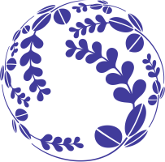

About Me
An average PhD Student 😳
🎓 Education
Tohoku University  | 🇯🇵 | PhD in Public Health | Sep 2018 - Aug 2022
Universsity College London  | 🇬🇧 | MSc in Dental Public Health | Sep 2015 - Aug 2016
| 🇬🇧 | MSc in Dental Public Health | Sep 2015 - Aug 2016
University of Peradeniya  | 🇱🇰 | Bachelor of Dental Surgery (BDS) | May 2006 - Aug 2011
| 🇱🇰 | Bachelor of Dental Surgery (BDS) | May 2006 - Aug 2011
💙 Interests
Health Inequalities | Social determinants of health | Oral Health
Epidemiology | Biostatistics | Causal inference [ with TMLE / LMTP] | Machine Learning |  programming
programming
Cricket | Badminton | Movies | Coding | Linux